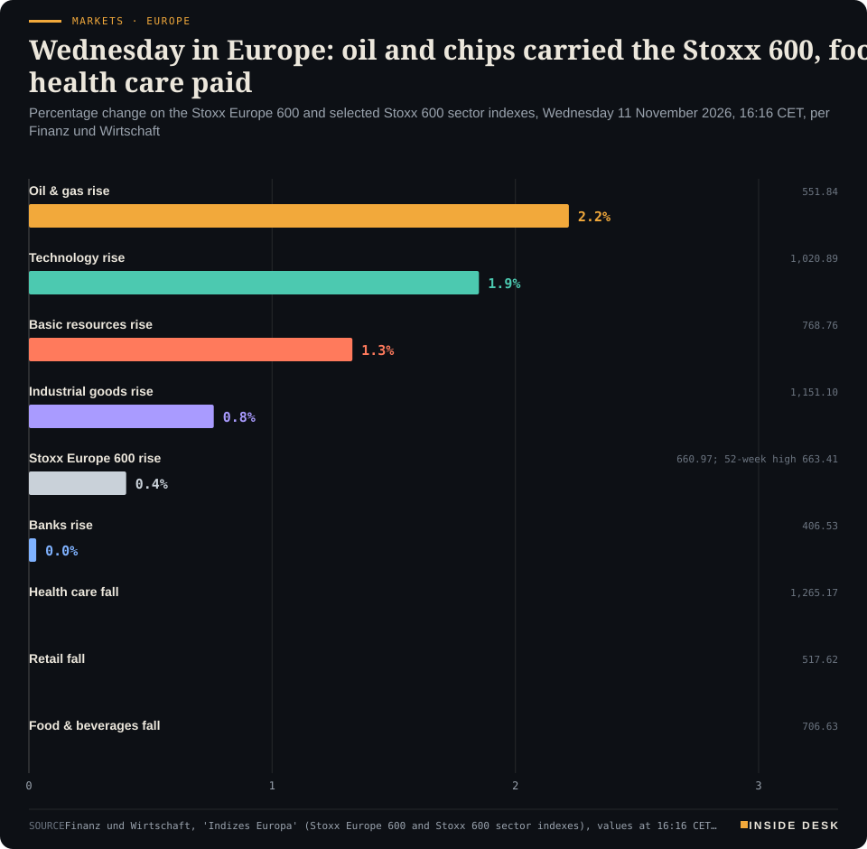
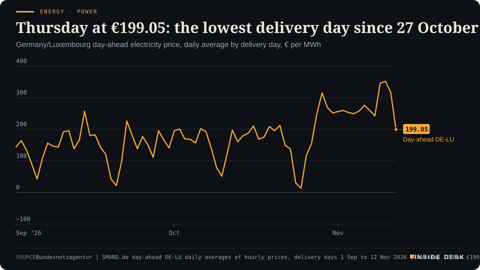

The statisticians confirmed October's prices line by line, a heart association counted what service leaves behind, and divers counted 137 small fish in a desert cave: a day when counting carefully was the work that mattered.
Geo-economics · p. 5
Energy & Industry · p. 10
Climate & Weather · p. 17
The day in one sentenceThe statisticians confirmed October's prices line by line, a heart association counted what service leaves behind, and divers counted 137 small fish in a desert cave: a day when counting carefully was the work that mattered.
ContentsInside Desk · Evening ePaper11 November 2026
17:30 Evening ePaper, updated live until 22:30 with an “Updated” time and a Latest page
Sun 10:00 The Sunday Magazine
Berlin time. Every issue is free.
How to read it
Swipe, use the arrow keys or the page strip. Tap any headline for the reading view. Press / to search, t for contents, +/− to zoom. Download the PDF.
LatestInside Desk · Evening ePaper11 November 2026
Latest
Live: this page and the issue are updated until 22:30 Berlin time.
Markets: Stoxx 600 and DAX set record closes
LeadInside Desk · Evening ePaper11 November 2026
Markets & Macro · Lead · 3 min
Europe spent Wednesday just below its records, carried by chips, oil and a turbine maker's invoices. US Treasuries said nothing: they were shut.
Europe spent Wednesday close enough to its records to see them, and did not quite touch them. At 16:16 CET the Stoxx Europe 600 stood at 660.97, up 0.40% on the day, against a 52-week high of 663.41; its best moment of the day was 663.361. Germany’s DAX was up 0.91% at 26,587.90 at 16:31 CET, after a day’s high of 26,659.42, beneath a record of 26,692.901. Desk arithmetic: the Stoxx 600 was 2.44 points, or about 0.37%, short of the high, and the DAX 105 points, or about 0.39%. These are afternoon values, not closes; the cash session ends at 17:30 CET.
You will read “near record” in a lot of places tonight. It is accurate, and it is also the least interesting thing about the day. What moved Europe was mostly a set of invoices.
Markets · EuropeWednesday in Europe: oil and chips carried the Stoxx 600, food and health care paidPercentage change on the Stoxx Europe 600 and selected Stoxx 600 sector indexes, Wednesday 11 November 2026, 16:16 CET, per Finanz und Wirtschaft

Bar chart of Wednesday 11 November 2026 percentage changes at 16:16 CET, per Finanz und Wirtschaft: Stoxx 600 oil and gas up 2.22 percent, technology up 1.85 percent, basic resources up 1.33 percent, industrial goods up 0.76 percent, the Stoxx Europe 600 up 0.40 percent to 660.97, banks up 0.03 percent, health care down 0.37 percent, retail down 0.45 percent and food and beverages down 0.86 percent. These are intraday snapshot levels, not closes.
Source: Finanz und Wirtschaft, 'Indizes Europa' (Stoxx Europe 600 and Stoxx 600 sector indexes), values at 16:16 CET, 11 Nov 2026; intraday snapshot, not closing levels; retrieved 11 Nov 2026 · reported figures · CSV
The invoices. The first came from New York overnight. CoreWeave, the AI cloud provider that has become the market’s thermometer for AI spending, reported better-than-expected revenue and strong demand, and European chip equipment makers rose in sympathy: BE Semiconductor and ASM International were up more than 4% each in the morning, ASML and STMicroelectronics more than 3%3. ASM added a share buyback of up to €300 million2. By 16:16 CET the Stoxx 600 technology index was up 1.85%1.
The second came from Munich. Siemens Energy rose 7.7% in the morning2 after a year in which revenue rose 15.5% to €44.2bn, operating profit before special items more than doubled to €5.49bn, and the dividend was raised to €2.30 a share from 70 cents, with up to €9bn more in buybacks to 20307. That is not a story about a mood. It is a story about turbines and grid equipment ordered, built and paid for.
Not every invoice was welcome. Vestas fell 8% after narrowing its outlook, Brenntag 4.5% despite confirming its own, and CSG 23% after cutting its margin forecast2,3. The market can still tell one balance sheet from another. That is a healthier sign than any record.
The oil. The Stoxx 600 oil and gas index rose 2.22% by 16:16 CET, the best sector on the board1. Brent was up $1.32, or 1.4%, at $92.81 a barrel, after Iran’s security chief said Tehran would not allow enriched nuclear material to leave the country; Washington wants nuclear matters in any initial negotiation6. Brent has still fallen about 21% since the start of the month, CNBC notes6. One sentence from Tehran moved a dollar and change; eleven days of diplomacy have moved about a fifth of the price. Keep the proportions.
Geo-economicsInside Desk · Evening ePaper11 November 2026
Geo-economics · 2 min
The cartel kept its 2026 and 2027 demand forecasts unchanged for once. The more revealing line is about supply: the OPEC+ countries in the deal are pumping 3.4 million barrels a day below their own quota.
OPEC published its November Monthly Oil Market Report on Wednesday. For once, the headline was that nothing changed. The organisation still expects world oil demand to grow by about 0.2 million barrels a day (mb/d) in 2026, to 105.72 mb/d, and by about 2.6 mb/d in 2027, to 108.3 mb/d1,2. Before this month it had cut its 2026 growth forecast six times this year1. A pause after six cuts is not optimism. It is a forecaster waiting to see.
The split is the familiar one. OECD demand is seen falling by about 0.2 mb/d this year while the rest of the world adds about 0.4 mb/d; next year OPEC pencils in +0.5 mb/d for the OECD and about +2 mb/d elsewhere1,2. It also raised its 2026 world growth forecast slightly to 3.1%2.
The supply table is more interesting. The OPEC+ countries bound by the cuts raised output by 1.94 mb/d in October, to 32.817 mb/d, with Saudi Arabia adding 1.182 mb/d to reach 9.194 mb/d1. Their October quota, before compensation, was 36.206 mb/d, so they are producing 3.389 mb/d below what they are allowed1. Russia alone is 1.281 mb/d under its quota1. With Hormuz still restricted, that gap looks less like policy than like pipes, ports and insurance.
Prices have already moved. OPEC’s report puts October’s average ICE Brent front-month at $108.34 and its own basket at $112.122. Brent fell below $90 on Tuesday for the first time since late August, more than 20% under its 30 October high of $118, Reuters reports3. Desk arithmetic: $90 is about 17% below October’s $108.34 average.
For you: a monthly report from a producers’ club is part of the dull machinery of the oil market, and it is useful because it is boring. Look past the demand forecast to the quota gap. That gap is barrels that could come back once ships can move freely again, and the report says how many. Nothing here is investment advice.
Geo-economics · Short item · ePaper extra, added
Two provisional anti-dumping regulations in one Official Journal: acrylic esters from four countries, including the US, and copper tubes from four more.
No speech came with it. On Wednesday the EU’s Official Journal published two Commission regulations imposing provisional anti-dumping duties, the slow, evidence-based tools of trade policy1.
Acrylic esters. Regulation (EU) 2026/2512 sets provisional duties of 22.3% to 40.3% on butyl acrylate and 2-ethylhexyl acrylate from China, Saudi Arabia, South Africa and the United States; Chinese producers face 22.3% to 29.0%1. The duties apply from 10 November, a day before publication2. These chemicals feed adhesives, paints, coatings and technical textiles, so downstream buyers pay at customs from now on2.
Geo-economics · Brief · ePaper extra, added
Ship counts in the Strait of Hormuz look like a closure. Barrel counts tell a different story. According to Kpler, cited by Reuters columnist Ron Bousso, crude through Hormuz has averaged 10.5 million barrels a day since the start of October, against 13.5 million before the war. Including routes that bypass the strait, total Gulf crude exports average 16.7 million, just short of the pre-war 17 million1.
The workaround costs money: convoys along Oman’s coast under US Navy protection, ship-to-ship transfers, and freight and insurance at about ten times pre-war levels1. The International Maritime Organization counted 131 confirmed incidents near the strait between 28 February and 9 November, including 35 in October, the highest monthly total of the war1.
So the oil arrives. Getting it out is what costs more. That shows up in invoices more than in headlines. Nothing here is investment advice.
Markets & MacroInside Desk · Evening ePaper11 November 2026
Markets & Macro · Short item · ePaper extra, added
A record year, a tripled dividend and up to €9bn more in buybacks. The quieter line is the wind unit's forecast, which still reads close to zero.
Siemens Energy proposes a dividend of €2.30 a share for the year to September, up from 70 cents, and plans to buy back up to €9bn more of its own shares by the end of fiscal 2030, on top of €3.1bn of buybacks in the year just ended1. The shares rose 7.7% on Wednesday morning3.
The money comes from somewhere specific. Orders reached €68.1bn, 18.8% more than a year earlier on a comparable basis, and the order backlog a record €164bn1. Revenue rose 15.5% to €44.2bn, and net income to €4,129m from €1,685m1. Demand for turbines and grid equipment to power data centres has given the group “a huge boost”, Reuters notes2. For 2027 the company expects net income of around €5bn1.
Now read the small print. Siemens Gamesa, the wind unit Reuters calls “long-loss-making”2, reached break-even on profit before special items1. For 2027 it guides to revenue down 1% to 3% and a margin of 0% to 2%1. Gas Services, by contrast, expects revenue growth of 24% to 26%1. Desk arithmetic: the backlog is about 3.7 times this year’s revenue.
The lesson is old-fashioned. A dividend tripled out of cash and an order book is a different thing from a valuation tripled out of a story. Nothing here is investment advice.
Markets & Macro · Brief · ePaper extra, added
Vestas shares fell 8% on Wednesday morning2 after third-quarter revenue of €5.68bn and operating profit before special items of €483m both missed analysts’ estimates1. Turbine order intake fell 27% by volume to 3,377 megawatts, mainly on weaker onshore orders in the US, though the average selling price rose to €1.22m per megawatt1.
The outlook was narrowed, not cut: 2026 revenue of €20.5bn to €21.5bn instead of €20bn to €22bn, and an operating margin of 7.5% to 8.5% instead of 7% to 9%1. The combined turbine and service backlog stands at €77.9bn1. Chief executive Henrik Andersen said the narrower range reflected improved visibility1. A tighter range is less exciting than a raised one, and more useful. Nothing here is investment advice.
Markets & Macro · Brief · ePaper extra, added
The Stoxx Europe 600 closed up 0.72% at 663.05, a record close1, 0.36 points under its intraday high of 663.41 (desk arithmetic)3. The DAX closed up 1.20% at 26,662.772, also a record close by Dow Jones’s count2, and about 30 points under last Thursday’s intraday high of 26,6924. Siemens Energy led, up 10.8%4; the arms maker CSG fell 21.6% after cutting its margin forecast3. Société Générale called the rally “somewhat stretched”3. A record close is a fact about yesterday’s buyers, not tomorrow’s. Not investment advice.
Politics & InstitutionsInside Desk · Evening ePaper11 November 2026
Politics & Institutions · 2 min
On the eve of the budget committee's final session, the coalition says it is nearly done. The last-minute edits show where the money actually moves: electric cars up, frigates later, and a €5 billion tax question with a condition attached.
The coalition is “close to a final agreement” on the 2027 federal budget, says Dirk Wiese, the SPD’s parliamentary whip. Budget and finance politicians from the CDU/CSU and SPD had worked together “really extremely constructively” in recent days, and “a lot of open points” had “already been cleared away”, he said in Berlin on Wednesday1. The budget committee finalises the plan on Thursday; the Bundestag could pass it at the end of November1.
The new sentence was about bracket creep, the kalte Progression: the effect by which a pay rise that only matches inflation pushes you into a higher tax rate. The finance ministry’s first draft did not offset it. Wiese said he was open to the CDU/CSU demand to do so, but it must all be “sauber gegenfinanziert” (properly funded); “that is the decisive point”1. ZDF puts the cost of a further offset at about €5 billion in 20273. So the door is open, and the condition is the costly part.
Meanwhile, the finance ministry’s amendment paper to the committee, seen by Handelsblatt, shows the less visible changes2:
Electric cars: the purchase subsidy rises from €800 million to €1.7 billion, because take-up has been “much more dynamic” than expected2.
Defence: about €11 billion is reshuffled. A €2 billion unallocated “global spending cut” is dissolved, while frigates and the Bundeswehr’s tactical wide area network (TaWAN) slip, with spending €1.34 billion and €1.18 billion lower than planned2.
None of this will make a slogan. It is still the budget. Money moving from projects that run late to programmes people are actually using is how a ledger reflects reality. …
Politics & Institutions · Short item · ePaper extra, added
The first general strike in 14 years was big and uneven. Behind it are two statistics, a snap election and a housing law that never passed.
Millions of people in Spain joined the country’s first general strike in 14 years on Wednesday, a 24-hour stoppage backed by the largest unions and tenants’ associations under the slogan “Salaries. Housing. Prices”1. Unions reported 90% participation in the car industry and ports and 82% in waste collection, but said turnout was uneven across the country1. In Catalonia, CCOO and UGT estimated an average of 84%2; union figures reported by EFE put Extremadura and Castilla-La Mancha at about 41%3. The employers’ federation CEOE saw “low participation” in most sectors and pointed to the grid: after 08:00, electricity demand was down about 10%, less than the drops of more than 14% in earlier strikes3. By midday, officials said 27 people had been arrested over minor incidents1.
The grievance has numbers behind it. Rents have risen by 80% in a decade and home prices by 63%, as more flats became tourist lets, short-term rentals and investments1. Tenants’ unions want limits on evictions of vulnerable people, rent freezes and a crackdown on short-term lets1.
The politics are tight. Spain votes on 29 November in a snap election called by Pedro Sánchez after right-wing parties blocked his emergency housing legislation; polls point to a PP–Vox coalition1. Sánchez praised the strike; Madrid’s regional president Isabel Díaz Ayuso said strikers were “holding citizens hostage”1.
For you: a strike is loud for a day. Rents are paid every month. Whoever governs after 29 November will be judged on permits, completions and lease terms, the dull machinery that decides what a flat costs.
Politics & InstitutionsInside Desk · Evening ePaper11 November 2026
Thousands marched through Warsaw on Wednesday to mark 108 years since Poland regained independence in 19181. The annual Independence March is still divisive because of past violence and the presence of nationalist and far-right groups, yet it has become more mainstream; organisers hoped for up to 500,000 people1. President Karol Nawrocki walked in the procession. By mid-afternoon, TVP Info reported no major incidents beyond widespread red flares1.
Prime Minister Donald Tusk stayed away and attended a smaller event in Szczecin. “We may hold different views … yet, anyone who truly cares about Poland must understand that this space, defined by independence, freedom, and a secure Republic, is a common good,” he said1. The 2027 parliamentary election is less than a year away1.
A national holiday split between two cities is not ideal. A quiet afternoon with no major incidents is still a small win for the institutions both men lead.
Psychology & BehaviourInside Desk · Evening ePaper11 November 2026
Psychology & Behaviour · 2 min
A Hong Kong study screened everything it had for links to resilience instead of picking favourites. The method is the news; the list is the starting point.
The Annex reads the method behind the headline. Today’s: researchers at the University of Hong Kong’s School of Public Health say they have identified 35 factors linked to psychological resilience, the ability to keep or recover mental health in the face of adversity, in data from 26,210 residents aged 15 and over1. The paper is in Nature Mental Health1.
The design. Most resilience studies test one favourite factor at a time, usually in Western samples1. This one used the FAMILY Cohort, a population-based prospective cohort, and an “environment-wide association study”: it screened all 208 candidate predictors it had, across personal, family, social and lifestyle domains, rather than a pre-selected few1. The team says statistical corrections and internal validation were used to cut the risk of false positives and selective reporting1. That is the part worth admiring: when you test 208 things, some will look important by luck, and the correction is the institution saying so in advance.
The result. The 35 survivors fall into seven domains, from health and life satisfaction to close relationships, financial stability (for example, having medical insurance) and health behaviours such as meeting WHO physical-activity levels1. One detail is quietly useful: interactive weekend activities with family, such as exercising, sharing meals or chatting, went with higher resilience over time; passive family time showed no significant link1. Links differed by group: family harmony and medical insurance mattered more for women, physical activity and religious involvement more for men, and most associations were stronger in people over 60 than in those aged 15 to 241.
The footnote that matters. The lead author, Dr Michael Ni Yuxuan, says it plainly: “this observational study does not establish causality”1. People who volunteer may be resilient because they volunteer, or volunteer because they are resilient. The study cannot tell which.
For you. The list reads like common sense, and that is not a criticism. …
Psychology & Behaviour · Short item · ePaper extra, added
A UCL cohort of people born in one week of 1970 values health above all, while a quarter rate their own as poor or fair.
Ask about 8,000 people born in England, Scotland and Wales in one week of 1970 what matters most, and they answer health: 9.3 on a scale of 1 to 10, for men and women and across income groups1. Friendships scored 8.9, marriage or partnership 8.7, independence 8.6; a fulfilling job 7.9, home ownership 7.8, children 7.5, and money came last at 6.11. …
In more than two million California deliveries from 2016 to 2021, 10% of women diagnosed with cannabis use disorder during pregnancy made a psychiatric emergency-department visit in the year after giving birth, against 15.6% of women with alcohol use disorder and under 3% of women with neither1. Over the six years, the diagnosis among pregnant women rose by 40% while alcohol use disorder stayed flat1. The study, in Annals of Epidemiology, was led from UC Merced1.
“This study is not designed to prove that cannabis use disorder causes psychiatric emergencies,” says Sidra Goldman-Mellor1. Its use is plainer: it marks a group that screening in antenatal and postpartum care should not miss1.
Energy & IndustryInside Desk · Evening ePaper11 November 2026
Energy & Industry · 2 min
Wednesday's auction priced Thursday's power at €117.60 less than Wednesday's. Most of Thursday's hours now clear below Wednesday's cheapest one.
Thursday’s electricity was auctioned on Wednesday, and it came out cheap by the standards of this fortnight. The German-Luxembourg day-ahead price for delivery on Thursday 12 November averages €199.05 per megawatt hour, against €316.65 for Wednesday and a record €351.48 for Tuesday1. Desk arithmetic: that is €117.60, or about 37.1%, below Wednesday, and the lowest delivery day since €155.12 on Tuesday 27 October1.
Energy & Industry · Short item · ePaper extra, added
The cabinet approved a national gas reserve on Wednesday. It is insurance against a bad winter, priced in advance and paid by levy, which is exactly what insurance should be.
The federal cabinet on Wednesday approved a draft law for a national gas reserve1. It is meant to hold 24 billion kilowatt hours, about a tenth of Germany’s storage capacity, and the Bundesnetzagentur could draw on it only once an emergency stage has been declared1. The draft sizes it to cover a 20-day loss of all Norwegian pipeline imports, a 40-day loss of all German LNG terminals, or full supply of households and businesses for ten days in an extremely cold winter and 18 days in a normal one1.
Not for this winter. Building the reserve is to start for winter 2027 and take several years1. The background is this year’s storage season: with gas expensive because of the Iran war, filling stores in summer barely paid, and the 70% fill target was clearly missed2. The fill-level rules will not be extended; the ministry says supply this winter is secure, mainly through ongoing imports2.
The invoice, in advance. A levy on gas customers is to pay for it from 1 October 20271. E&M reports annual costs of €247m to €308m in the draft; Handelsblatt’s summary puts the upper end at €405m1,2. About 40% would fall on households and businesses, 60% on industry1. For a flat using 13,000 kWh a year, the draft puts the extra at €3.77 a year; for a house using 20,000 kWh, €7.201. The levy is disputed within the coalition, and the municipal utilities’ association VKU wants it paid from the federal budget instead1.
Alongside it. A key-points paper, also approved, would oblige suppliers to actually use storage capacity they have booked, with sanctions, to protect households, hospitals and care homes2.
Desk arithmetic: €3.77 is about 31 cents a month. A reserve you hope never to use, priced on the bill like a fuse, is dull. It is meant to be.
Energy & Industry · Brief · ePaper extra, added
At the UN climate talks in Antalya, Türkiye is pushing a “35 by 35” pledge: electricity’s share of global energy consumption up to 35% by 20351. Today it is 23%, according to Australia’s climate and energy minister Chris Bowen, who said reaching 35% “would require more than a four-fold increase in the rate of electrification”1.
The sticking point is the source. The draft wording does not require the extra electricity to be clean, saying pathways “will differ according to different starting points”1. Sceptics say fossil-fired electrification would lock in fossil fuels; IEA chief Fatih Birol argues that cost would push the pledge towards lower emissions anyway1. Analysts cited by ABC estimate a purely clean route could take 0.3C off projected warming1.
A pledge is a speech. The grid connections, transformers and meters that follow are the invoice. Watch for those.
Money, FX & CommitteesInside Desk · Evening ePaper11 November 2026
Money, FX & Committees · Podium vs Print · 2 min
In Riga, the Bundesbank's president promised to do what is necessary. In Wiesbaden, the statistics office had already printed a month in which German prices fell.
Podium
“"I guess we will do what is necessary again to bring it back to 2%, because currently it is too high, inflation is too high."”
Joachim Nagel, President of the Deutsche Bundesbank and member of the ECB Governing Council, on a panel at Latvijas Banka's economic conference in Riga, as reported by Econostream, Wednesday 11 November 2026
Print2.1% core
Energy was still 12.2% dearer than a year earlier; inflation excluding energy was 2.0%.
Federal Statistical Office (Destatis), final consumer price index for Germany, October 2026, Wednesday 11 November 2026, morning
The podium. On a panel in Riga on Wednesday, Bundesbank President Joachim Nagel said the ECB had beaten inflation before: “I guess we will do what is necessary again to bring it back to 2%, because currently it is too high, inflation is too high,” Econostream reports1. He also said of Berlin’s spending: “We were really surprised by how big this fiscal package is”1.
The print. The same morning Destatis confirmed October’s figures. German consumer prices were 2.8% higher than a year earlier, down from 3.3% in September, and 0.2% lower than in September2. Core inflation, excluding food and energy, slowed to 2.1% from 2.4% in each of the three previous months; excluding energy alone it was 2.0%2,4. Energy was still 12.2% dearer than a year before3.
The gap. It is smaller than it looks. Nagel sits on a council that sets one rate for the whole euro area, and he was speaking about that, not about Germany’s October. And the German print itself carries an asterisk: Destatis President Ruth Brand said energy remained the main driver of inflation, while the new fuel discount in force since 1 October “is likely to have dampened inflation somewhat”2. A discount lowers a price; it does not lower a cost. Central banks know that difference better than anyone. Desk arithmetic: core inflation is 0.1 percentage point above the 2% target in Germany; the headline is 0.8 points above.
For you. For a household budget, the print is the number: services were 2.5% dearer than a year earlier, net rents 1.9% and heating oil 84.5%3. The podium only tells you which way the council leans. Nothing here is investment advice.
Money, FX & Committees · Short item · ePaper extra, added
October's price index shows what Germany's new fuel discount does and what it does not. If you heat with oil, the second half is yours.
Germany’s fuel discount came into force on 1 October, and October’s final price figures show it working where it was aimed. Motor fuels were 5.5% cheaper than in September, super petrol 5.8% and diesel 5.1%2. Year on year, fuels were still 28.9% dearer, but that was down from 37.1% in September1.
The discount does not reach the tank in the cellar. Light heating oil rose 4.6% in the month and was 84.5% dearer than in October 2025, after 74.9% in September1,2. Electricity, by contrast, was 5.2% cheaper than a year earlier, and natural gas excluding service charges 1.2% cheaper1.
Desk arithmetic: on those year-on-year rates, a heating-oil fill that cost €1,000 in October 2025 would cost about €1,845 at October 2026 prices, while the same household’s gas bill, had it heated with gas, would be about €12 lower per €1,000. These are national averages, not your dealer’s quote.
“Energy” is not one price. The forecourt, the electricity bill and the oil delivery are three different invoices, moving in different directions. Nothing here is investment advice.
Money, FX & CommitteesInside Desk · Evening ePaper11 November 2026
Money, FX & Committees · Brief · ePaper extra, added
At the Paris Peace Forum on Wednesday, ECB President Christine Lagarde said the digital euro “will start next year with the pilot”, with the political agreement being concluded “as we speak”, Teleborsa reports (our translation)1. “We are improving payment infrastructure enormously,” she said1.
As ECB president, she said, she sees no more important urgency than building a real capital markets union2. In plain terms: a saver’s money in one country finding a firm in another without a border of paperwork in between. She called the ECB the guardian of the euro, the currency of 21 countries1. Lagarde leaves the ECB on 7 February3.
Payments and markets are dull infrastructure. That is why they last longer than speeches.
Ordinary & Inherited LifeInside Desk · Evening ePaper11 November 2026
Ordinary & Inherited Life · 2 min
The statisticians confirmed October's inflation today. The average is a public good; your own rate depends on what heats your home and fills your tank.
The Federal Statistical Office confirmed this morning what it estimated at the end of October: consumer prices were 2.8% higher than a year earlier, down from 3.3% in September1. “Energy prices remained mainly responsible,” said its president, Ruth Brand, adding that the fuel tax cut reintroduced at the start of October “may have dampened” the rise somewhat1.
Now look inside the average, because that is where households live. Energy as a whole was 12.2% dearer than a year ago, after 14.9% in September1. Fuels were up 28.9%1. Light heating oil was up 84.5%1. Firewood and pellets rose 14.5%2. And electricity, the one energy bill many people dread most, was 5.2% cheaper than a year earlier2.
So two neighbours on the same street can have very different Octobers. The one with an oil tank and a diesel commute has met inflation several times the headline. The one with an electric heat pump and a bicycle has met something closer to the 2.1% core rate, which strips out energy and food1. Net rents without heating rose 1.9%2.
Desk arithmetic: if your household spent €100 a month on electricity a year ago, the same use now costs about €94.80; €100 of heating oil then is about €184.50 of oil now.
None of this is a scandal; it is a measurement, published on schedule, with its components laid out for anyone to read. That is the useful part. Before you decide how worried to be about “inflation”, look up the three or four lines that match your own bills. Your rate is in the table, not the headline. Nothing here is investment advice.
Ordinary & Inherited Life · Short item · ePaper extra, added
Food as a whole rose only 0.4% on the year. Inside it, the aisles moved in opposite directions.
Food is no longer what drives German inflation. In October, food prices were 0.4% higher than a year earlier, according to the final figures the Federal Statistical Office confirmed today1. But a small average can hide large moves, and the supermarket had plenty.
Up: eggs cost 15.4% more than a year ago, fresh vegetables 11.5% more, and fish, fish products and seafood 4.5% more1. Down: butter was 18.9% cheaper, edible fats and oils 9.1%, dairy products 4.7%, fresh fruit 2.8%, and coffee, tea and cocoa 3.9%1,2.
For a household that cooks, that is a mixed message with a practical edge. The fridge door, with butter and milk, has become cheaper; the vegetable drawer has not. …
Ordinary & Inherited Life · Brief · ePaper extra, added
Hotels, inns, guesthouses and campsites in Germany recorded 389.8 million overnight stays from January to September, 0.6% more than the previous record set a year earlier at 387.6 million, the Federal Statistical Office said today1. Guests from Germany accounted for 324.7 million (+0.4%), guests from abroad for 65.0 million (+1.5%)1. September alone brought 48.9 million nights, 0.8% more than a year before; domestic guests stagnated while more came from abroad1.
One footnote: the count covers only businesses with at least ten beds or ten camping pitches, so many private holiday flats are not in it1. The record is real; it is also a record of the places that file returns.
Tech & ComputeInside Desk · Evening ePaper11 November 2026
Tech & Compute · 2 min
The Commission wants subscriptions as easy to leave as to join, and a human on the end of the line. The fight now is over defaults, not principles.
The European Commission on Wednesday proposed the Digital Fairness Act, its answer to the small frictions of online life that add up to real money1. Its own case is plain: around 60% of Europeans buy online, and online shoppers are over 60% more likely to run into problems than those buying in a shop1. Consumer commissioner Michael McGrath called it, together with a reform of cross-border enforcement, “the most significant reform of EU consumer protection rules in more than 20 years”2.
What is in it. A ban on “dark patterns” such as fake claims that a product is almost sold out; prices shown in real time, with the highest possible price, in virtual ticket queues; the option to turn off addictive features such as endless scrolling and autoplay; disclosure rules for influencers; limits on personalised ads and prices aimed at minors; and subscriptions that are easier to cancel, with reminders before free trials turn into paid ones1,2. Children would be protected from loot boxes and pay-to-progress mechanics in games, and you would be able to reach a human rather than only a chatbot in customer service2.
The invoice on both sides. The Commission’s impact assessment puts the annual benefit to consumers, including time lost, at €13.7 billion, against recurring costs to businesses of €678 million a year2. Desk arithmetic: about €20 of benefit for every €1 of cost, on the Commission’s own numbers. In large cross-border cases, the enforcement reform would allow fines of up to 6% of global annual turnover, and non-EU companies would need a legal representative in the EU2.
Tech & Compute · Short item · ePaper extra, added
A draft Parliament report on the Cloud and AI Development Act asks for faster data-centre permits and public buyers. The startups' request is the oldest in business: customers.
A joint draft report on the Commission’s proposed Cloud and AI Development Act was presented in the European Parliament on Wednesday1. It calls for common EU rules for cloud and AI infrastructure, more support for European providers, faster approval of new data centres that still respect environmental rules, and stronger protection for critical sectors such as health, energy and transport1.
The number behind it. According to the Commission, three non-European hyperscale providers control more than 70% of the European cloud market1. …
Tech & Compute · Brief · ePaper extra, added
CoreWeave’s third-quarter revenue rose 168% to $3.7 billion, and the company raised its 2026 outlook to $13 billion to $13.3 billion of revenue, against $12.86 billion expected by analysts polled by LSEG1. Its shares jumped 20% on Wednesday1.
The headline quote was about demand: chief executive Michael Intrator said the company is “10x oversubscribed” on its remaining 2027 capacity1. Treat that as a speech. The printed figure that matters more is financing: growth was backed by contract-secured financing and around $9 billion in customer prepayments and deposits1. That matters because earlier this month spreads on CoreWeave’s credit default swaps widened past 11%, a level generally viewed as distress1.
A prepayment is a customer putting cash behind a promise. It is the least glamorous line in the report, and the most persuasive. Nothing here is investment advice.
Health & CareInside Desk · Evening ePaper11 November 2026
Health & Care · 2 min
A new scientific statement finds very few US veterans reach optimal cardiovascular health, and points to the dull, working machinery of an integrated health system as the model.
On the day the United States marks Veterans Day, the American Heart Association published a scientific statement in Circulation with an uncomfortable number: fewer than 5% of US military veterans may achieve optimal cardiovascular health on its “Life’s Essential 8” measures1. For the general US adult population, the association puts the figure at around 20%1.
The eight measures are ordinary: healthy eating, physical activity, no tobacco, healthy sleep, healthy weight, and healthy levels of blood sugar, cholesterol and blood pressure1. The statement adds mental health and substance use, for good reason. Anxiety, depression and post-traumatic stress disorder can each independently double the risk of major cardiovascular disease, it says, and substance use disorder is linked to a life span six to 24 years shorter1.
“Veterans are not simply older adults who happen to have served in the military,” said Dr Neal Yuan of the University of California San Francisco, who chaired the writing group1. Service-related injuries and exposures, stress, rural homes and poor internet connections all stand between them and care1.
The constructive part is institutional, and refreshingly unglamorous. About 9 million veterans, nearly half of the total, are enrolled with the Department of Veterans Affairs, the country’s largest integrated health system1. The statement names its team-based primary care, where pharmacists, dietitians and behavioural-health staff work alongside doctors, its weight and activity programmes, and its telehealth for rural patients as models other systems could copy1. Its strategies are practical: screen for obesity, diabetes, cholesterol and blood pressure; screen for mental health and substance use while reducing stigma; use at-home blood-pressure cuffs where clinics are far away1.
For you, wherever you live: the eight measures are a checklist you can take to your next appointment. Not a verdict, a list of things a doctor can measure, and you can change.
Health & Care · Short item · ePaper extra, added
Day-active rodents under fluorescent light showed weaker body clocks and more high blood sugar. One midday hour of daylight helped. Humans are the next question, not the answer.
Occupational health usually means ladders, solvents and noise. A study from Michigan State University and UC Berkeley, published in the Journal of Biological Rhythms, asks about something quieter: the light you work under1.
The researchers used Nile grass rats, which, unlike almost all laboratory rodents, are active by day, as people are1. …
Health & Care · Brief · ePaper extra, added
Since 2011, hepatitis B vaccination has been part of the Dutch national childhood programme, so more and more people entering work are already fully vaccinated, usually without an antibody test1. The Health Council (Gezondheidsraad) now advises that those starting jobs with a risk of blood exposure, in health care, funeral services, police and fire brigades among others, receive a booster followed by a titre check, a blood test to confirm enough antibodies1.
The council says childhood vaccination gives very good protection; the point is that occupational vaccination needs “maximum certainty”1. Employers have a legal duty of care, and the national infection-control (LCI) guidelines will be updated in line with the advice1. A small, boring rule that closes a gap before anyone falls into it.
Security & OrderInside Desk · Evening ePaper11 November 2026
Security & Order · 2 min
Two days of talks produced a large prisoner exchange in principle and a travel plan: Moscow on Thursday, Dublin after. Territory stays the hardest file. That is a sequence, not a settlement, and sequences are how settlements start.
The second day of trilateral talks in Abu Dhabi ended on Wednesday after a session of just under two hours3. Nobody claimed a breakthrough, and the BBC found “no hint” of one1. What the round did produce is smaller and more useful: a humanitarian deal in principle and a calendar.
The swap. Both Moscow and Kyiv confirmed that a large-scale prisoner-of-war exchange is being prepared and could happen soon1. Russia’s chief negotiator, Vladimir Medinsky, said “mutual understanding” had been reached on some issues and that more talks would follow2. Zelenskyy listed “an important humanitarian arrangement regarding preparations for a new exchange” as the first result2. This morning a swap was a line in a source’s notes. Tonight both governments say it on the record.
The calendar. Jared Kushner said he and Steve Witkoff will meet Vladimir Putin in Moscow on Thursday, then fly to Dublin to debrief Zelenskyy, who is attending the European Political Community summit2. He hopes to “finalise” what he called “the biggest humanitarian release of prisoners” in Moscow2.
The hard file. Kushner said “the territorial issues … will be the hardest” and that “there is no trust right now between the sides”1,2. Ukraine’s Davyd Arakhamia called this round “one of the hardest”, said the Russians came “with very strict directives”, and still spoke of “good momentum”1. Donetsk remains the knot: Moscow wants the rest of it, Kyiv wants the line frozen1.
The empty chair. Europeans were in Abu Dhabi and met the US and Ukrainian teams, but the Kremlin said it had no contact with them1. Kushner said getting Europeans “added to the format” is on his agenda for Putin1. Medinsky was cool on the idea2. …
Security & Order · Short item · ePaper extra, added
The strait's counters show a trickle, Tehran names seven conditions without publishing them, and Washington says sanctions are doing the work of strikes.
By 16:31 CET on Wednesday, four AIS-visible commercial ships had crossed the Strait of Hormuz since midnight UTC: three heading into the Gulf, one heading out, and only one of them a tanker, according to the hormuz.now counter1. Its seven-day average is 6.9 crossings a day, against a pre-crisis baseline of 84.81. Another tracker, using Windward data, logged 10 transits on Tuesday, the last complete day, about 11% of the roughly 88 a day before the war; half of them ran with transponders off2.
The diplomacy is just as thin. …
Security & Order · Brief · ePaper extra, added
UK Defence Secretary Wes Streeting told the Financial Times that Britain and Russia need more channels of communication, especially direct military-to-military contact, to avoid “miscalculation”1. On Wednesday, Russian foreign ministry spokesperson Maria Zakharova replied at her briefing: “I can confidently recommend that the British defence secretary contact the Russian ministry of defence. They’ll pick up the phone and have a conversation,” Reuters reported1.
The tone was mocking. The content is worth keeping anyway. Hotlines are the dullest part of security policy: a number, a duty officer, a log of who called whom. They do not end wars. They keep a drone off course or a jet too close from turning into something nobody chose. If a sarcastic answer leads to a working phone line, that is a fair trade.
Climate & WeatherInside Desk · Evening ePaper11 November 2026
Climate & Weather · 2 min
The storm split in two and lost its worst wind before it hit Portugal. The rain did not read the forecast revision. The preparation paid for itself either way.
On Tuesday this desk reported that Storm Charles might come ashore near Lisbon with a possible sting jet. On Wednesday it did something less dramatic and more useful: it split. IPMA meteorologist Patrícia Gomes told Lusa the depression divided into “two distinct low-pressure cores” (our translation) and lost strength, one heading for Lisbon, the other running along the Algarve coast from Sagres to Vila Real de Santo António1. The civil protection commander said a sting jet had become less likely2.
The wind came down; the rain stayed. Warnings were cut accordingly. By early afternoon Lisbon and Setúbal were on red for rain only until 15:00 Lisbon time (16:00 CET), and Leiria, Castelo Branco, Beja and Portalegre went from red to orange1. Faro remained the only district on red for wind1. Gusts above 120 km/h were still recorded on exposed coast and in the Serra de Monchique1. Between midnight and noon Lisbon time, civil protection counted 538 incidents on the mainland, mostly floods, fallen trees and road clearances, chiefly around Lisbon and Setúbal2. On Tuesday it had been 1,2401.
What the day cost, so far. By 11:00 Lisbon time, 360 flights had been cancelled at Lisbon, Madeira, Faro and Porto, most of them at Lisbon1. Eight national roads were restricted by 14:00, including the Eixo Norte-Sul access in Lisbon1. The grid held: E-REDES, the distribution operator, said the night passed “without significant incidents”, with about 2,000 customers without power at 07:00 Lisbon time, after it had put generators, mobile power units, helicopters and drones on standby3.
Was it too much? Asked whether the state had overreacted with closed schools and services, interior minister Luís Neves said no, and that “prevention is always the best remedy” (our translation)1. You can disagree about the dose. But note what the closures bought: the incidents that came were small ones, handled by crews already on shift. …
Climate & Weather · Short item · ePaper extra, added
In Madeira a storm is a hazard. In the Sierra Norte of Seville it is also a delivery of water to the dams.
Storms Bruna and Charles are not only a story of red warnings. In the province of Seville they are also a rainfall ledger. AEMET station data from 00:00 on Sunday 8 November to 08:00 on Wednesday put Guadalcanal top with 122.2 litres per square metre, followed by Cazalla de la Sierra with 101.7, both in the Sierra Norte1. Tomares had 73.2, and the city’s two stations, Tablada and the airport, 59 and 58.21.
An uneven gift. The same days left La Roda de Andalucía with 4 litres, Écija with 5.9 and Lora de Estepa with 91. Desk arithmetic: Guadalcanal received about 30 times as much rain as La Roda in the same period. Rain is an average only on a map; on a farm it is a postcode.
Climate & Weather · Brief · ePaper extra, added
At the COP31 leaders’ summit in Antalya on Wednesday, Ursula von der Leyen called this year “the summer of truth” and told delegates: “We are on track to meet our 2030 climate target of cutting emissions by more than half”1.
The print is a little cooler. The Guardian notes that the European Environment Agency’s report this week found that current policies plus planned measures would cut emissions by 54% from 1990 levels, just short of the legally binding 55%1. Desk arithmetic: one percentage point of 1990 emissions is the gap between “on track” and “nearly”.
Nearly is good news, honestly stated. It means the remaining work is known and measurable. The same morning, UN Secretary-General António Guterres told leaders that “the dinosaurs did not have a lobby. Fossil fuels do”1. Lobbies speak. Agencies like the EEA count. Keep reading the counters.
Charts and dataInside Desk · Evening ePaper11 November 2026
Charts and data
Energy · PowerThursday at €199.05: the lowest delivery day since 27 OctoberGermany/Luxembourg day-ahead electricity price, daily average by delivery day, € per MWh

Line chart of the daily average German-Luxembourg day-ahead electricity price from 1 September to 12 November 2026, in euros per megawatt hour. It falls to €13.12 on Sunday 25 October, climbs to €314.85 on Thursday 29 October, stays between €242.13 and €275.64 from 2 to 8 November, then reaches €345.64 on 9 November and a record €351.48 on 10 November. Wednesday 11 November is €316.65. The latest value is €199.05 for delivery on Thursday 12 November, €117.60 below Wednesday and the lowest delivery day since €155.12 on Tuesday 27 October.
Source: Bundesnetzagentur | SMARD.de day-ahead DE-LU daily averages of hourly prices, delivery days 1 Sep to 12 Nov 2026 (Thursday 12 Nov €199.05, auction of 11 Nov), retrieved 11 Nov 2026, 16:31 CET · CC BY 4.0 · CSV
Latest values
Series
Value
Date
Chart
Day-ahead DE-LU
199.05
12 Nov 2026
Thursday at €199.05: the lowest delivery day since 27 October
Last data point of each series in the charts above, from the Inside Desk data archive. Sources under each chart.
Back pageInside Desk · Evening ePaper11 November 2026
Before you close the tab
The day in one sentence
The statisticians confirmed October's prices line by line, a heart association counted what service leaves behind, and divers counted 137 small fish in a desert cave: a day when counting carefully was the work that mattered.
One thing you can do this week
Once a quarter, on the day the inflation figure comes out, write two numbers on one line: the interest rate on each account you hold, and the latest inflation rate. Then add a third: the change in the one price that matters most in your house, whether that is heating oil, electricity or the weekly shop. Three numbers, five minutes, and next time a headline says "inflation", you will know what it means for you.
A habit, not advice.
What went right
In a single water-filled cavern in Death Valley, divers and surface counters from the US National Park Service and the Fish and Wildlife Service counted 137 endangered Devils Hole pupfish on 10 October, nearly double the 77 seen in spring and about double the 69 recorded in autumn 2025 1. Two earthquakes in 2025 had knocked the population back; scientists then released 72 captive-raised fish between March 2025 and February 2026 and fed the pool while its algae recovered 1. Because the fish live only 10 to 14 months, biologists believe most of the 137 hatched and grew in Devils Hole itself 1. "While challenges remain, we're encouraged by this progress," said park superintendent Mike Reynolds 1. The two agencies have counted these fish the same way since 1972 1. Fifty-four years of patient counting is why we can call this good news, rather than guess.
In euros at home
With October inflation confirmed at 2.8%, money in an account that pays nothing loses purchasing power: €10,000 would be worth about €9,728 in today's money a year from now, a loss of about €272, according to an example calculation published with today's figures 2. At 2.5% interest, the European Central Bank's current deposit rate, the same €10,000 earns €250 a year if it falls within the tax-free saver's allowance, or about €184 after withholding tax and solidarity surcharge 2. Desk arithmetic: the gap between earning nothing and earning €184 after tax is €184 a year on €10,000, and the remaining real loss on the taxed account is about €88 (€272 minus €184).
Example figures from Merkur/€uro-Finanzwissen, 11 Nov 2026, based on the Federal Statistical Office's confirmed October CPI and the ECB's deposit rate; tax example at 25% withholding tax plus solidarity surcharge, no church tax. Your own rate, taxes and allowance will differ. Nothing here is advice.
Small words
Kerninflation (core inflation)
Inflation measured without energy and food, the two groups whose prices jump around most 3. In October it was 2.1% in Germany, against 2.8% for the full basket 3. Economists watch it because it shows the slower, stickier part of price rises; households should remember it leaves out exactly the bills, heating and groceries, that many of them feel most.
Commentary for information only. Not investment, legal, tax, medical or political advice. Inside Desk is free and reader-supported. Every number is sourced in the piece it appears in.
This issue has been updated.
All articles in this edition
Markets & Macro · 3 min read
0.37% from the high, and a bond market on holiday
Europe spent Wednesday just below its records, carried by chips, oil and a turbine maker's invoices. US Treasuries said nothing: they were shut.
Europe spent Wednesday close enough to its records to see them, and did not quite touch them. At 16:16 CET the Stoxx Europe 600 stood at 660.97, up 0.40% on the day, against a 52-week high of 663.41; its best moment of the day was 663.361. Germany’s DAX was up 0.91% at 26,587.90 at 16:31 CET, after a day’s high of 26,659.42, beneath a record of 26,692.901. Desk arithmetic: the Stoxx 600 was 2.44 points, or about 0.37%, short of the high, and the DAX 105 points, or about 0.39%. These are afternoon values, not closes; the cash session ends at 17:30 CET.
You will read “near record” in a lot of places tonight. It is accurate, and it is also the least interesting thing about the day. What moved Europe was mostly a set of invoices.
Markets · EuropeWednesday in Europe: oil and chips carried the Stoxx 600, food and health care paidPercentage change on the Stoxx Europe 600 and selected Stoxx 600 sector indexes, Wednesday 11 November 2026, 16:16 CET, per Finanz und Wirtschaft
Bar chart of Wednesday 11 November 2026 percentage changes at 16:16 CET, per Finanz und Wirtschaft: Stoxx 600 oil and gas up 2.22 percent, technology up 1.85 percent, basic resources up 1.33 percent, industrial goods up 0.76 percent, the Stoxx Europe 600 up 0.40 percent to 660.97, banks up 0.03 percent, health care down 0.37 percent, retail down 0.45 percent and food and beverages down 0.86 percent. These are intraday snapshot levels, not closes.
Source: Finanz und Wirtschaft, 'Indizes Europa' (Stoxx Europe 600 and Stoxx 600 sector indexes), values at 16:16 CET, 11 Nov 2026; intraday snapshot, not closing levels; retrieved 11 Nov 2026 · reported figures · CSV
The invoices. The first came from New York overnight. CoreWeave, the AI cloud provider that has become the market’s thermometer for AI spending, reported better-than-expected revenue and strong demand, and European chip equipment makers rose in sympathy: BE Semiconductor and ASM International were up more than 4% each in the morning, ASML and STMicroelectronics more than 3%3. ASM added a share buyback of up to €300 million2. By 16:16 CET the Stoxx 600 technology index was up 1.85%1.
The second came from Munich. Siemens Energy rose 7.7% in the morning2 after a year in which revenue rose 15.5% to €44.2bn, operating profit before special items more than doubled to €5.49bn, and the dividend was raised to €2.30 a share from 70 cents, with up to €9bn more in buybacks to 20307. That is not a story about a mood. It is a story about turbines and grid equipment ordered, built and paid for.
Not every invoice was welcome. Vestas fell 8% after narrowing its outlook, Brenntag 4.5% despite confirming its own, and CSG 23% after cutting its margin forecast2,3. The market can still tell one balance sheet from another. That is a healthier sign than any record.
The oil. The Stoxx 600 oil and gas index rose 2.22% by 16:16 CET, the best sector on the board1. Brent was up $1.32, or 1.4%, at $92.81 a barrel, after Iran’s security chief said Tehran would not allow enriched nuclear material to leave the country; Washington wants nuclear matters in any initial negotiation6. Brent has still fallen about 21% since the start of the month, CNBC notes6. One sentence from Tehran moved a dollar and change; eleven days of diplomacy have moved about a fifth of the price. Keep the proportions.
The quiet one. On the other side of the Atlantic, US stocks opened on Veterans Day, and the US bond market did not: SIFMA had recommended a full close for dollar-denominated government and corporate bond trading5. At 15:49 CET the S&P 500 was up 0.76% at 7,578.07 and the Nasdaq Composite up 1.16% at 25,354.34, while the Dow was down 0.13% at 52,162.064. CoreWeave was up 12.7% and Nvidia 2.4%, after Nvidia had shed about $430 billion of market value in the previous two sessions4. Traders still treat a Fed rate rise in December as certain, with an 11.5% chance of a half-point move, according to the CME FedWatch tool cited by Reuters4.
The dull machinery. In Wiesbaden, the statistics office confirmed October German inflation at 2.8%, down from 3.3% in September, with prices down 0.2% on the month and core inflation, excluding food and energy, slowing to 2.1% from 2.4%8. In Riga, Bundesbank President Joachim Nagel said interim assessments pointed to “a stronger recovery than we were expecting in the summer” and that growth “is likely to accelerate in the fourth quarter”, while warning the recovery is “not yet broad-based”9. Neither line will trend. Both matter more than a record.
For you. A day near the top is a good day to read what is underneath it: order books, dividends paid out of cash, and a price index that stopped climbing. Records come and go; the paperwork stays. Nothing here is investment advice.
Desk comment A record is a number the market has already paid. The invoice behind it is the part worth reading.
Sources
Indizes Europa — Finanz und Wirtschaft, 11 Nov 2026, 16:16–16:31 CET
Six cuts, then a pause: OPEC's November report holds its demand numbers still
The cartel kept its 2026 and 2027 demand forecasts unchanged for once. The more revealing line is about supply: the OPEC+ countries in the deal are pumping 3.4 million barrels a day below their own quota.
OPEC published its November Monthly Oil Market Report on Wednesday. For once, the headline was that nothing changed. The organisation still expects world oil demand to grow by about 0.2 million barrels a day (mb/d) in 2026, to 105.72 mb/d, and by about 2.6 mb/d in 2027, to 108.3 mb/d1,2. Before this month it had cut its 2026 growth forecast six times this year1. A pause after six cuts is not optimism. It is a forecaster waiting to see.
The split is the familiar one. OECD demand is seen falling by about 0.2 mb/d this year while the rest of the world adds about 0.4 mb/d; next year OPEC pencils in +0.5 mb/d for the OECD and about +2 mb/d elsewhere1,2. It also raised its 2026 world growth forecast slightly to 3.1%2.
The supply table is more interesting. The OPEC+ countries bound by the cuts raised output by 1.94 mb/d in October, to 32.817 mb/d, with Saudi Arabia adding 1.182 mb/d to reach 9.194 mb/d1. Their October quota, before compensation, was 36.206 mb/d, so they are producing 3.389 mb/d below what they are allowed1. Russia alone is 1.281 mb/d under its quota1. With Hormuz still restricted, that gap looks less like policy than like pipes, ports and insurance.
Prices have already moved. OPEC’s report puts October’s average ICE Brent front-month at $108.34 and its own basket at $112.122. Brent fell below $90 on Tuesday for the first time since late August, more than 20% under its 30 October high of $118, Reuters reports3. Desk arithmetic: $90 is about 17% below October’s $108.34 average.
For you: a monthly report from a producers’ club is part of the dull machinery of the oil market, and it is useful because it is boring. Look past the demand forecast to the quota gap. That gap is barrels that could come back once ships can move freely again, and the report says how many. Nothing here is investment advice.
Desk comment A forecast left unchanged is not news. A quota left unfilled is.
22.3% to 51.5%: the EU's trade defence works through its Wednesday paperwork
Two provisional anti-dumping regulations in one Official Journal: acrylic esters from four countries, including the US, and copper tubes from four more.
No speech came with it. On Wednesday the EU’s Official Journal published two Commission regulations imposing provisional anti-dumping duties, the slow, evidence-based tools of trade policy1.
Acrylic esters. Regulation (EU) 2026/2512 sets provisional duties of 22.3% to 40.3% on butyl acrylate and 2-ethylhexyl acrylate from China, Saudi Arabia, South Africa and the United States; Chinese producers face 22.3% to 29.0%1. The duties apply from 10 November, a day before publication2. These chemicals feed adhesives, paints, coatings and technical textiles, so downstream buyers pay at customs from now on2.
Copper tubes. Regulation (EU) 2026/2497 imposes provisional duties of up to 51.5% on refined copper tubes in level-wound coils from China, Mexico, Vietnam and Uzbekistan1.
Two details are worth noting. First, the US is on the acrylics list. Trade defence follows case files, not alliances. Second, these duties are provisional: the Commission can make them definitive, change them or drop them when the investigation ends2. Last Friday, 6 November, the Commission also opened a safeguard investigation into PET resin chemicals after a 27% rise in imports1.
For you: if your company buys these inputs, check your contracts for clauses that pass on tariff costs, and your customs broker’s start date. A tariff in a regulation number is less dramatic than one in a speech, but it is the kind you will actually pay. Nothing here is investment advice.
Appears only in the ePaper · Commentary for information only. Not advice.
Geo-economics · Brief · ePaper extra, added
16.7 against 17: Gulf crude found its way round, at ten times the freight
Barrels leaving the Gulf are almost back to pre-war levels. The bill for getting them out is not.
Ship counts in the Strait of Hormuz look like a closure. Barrel counts tell a different story. According to Kpler, cited by Reuters columnist Ron Bousso, crude through Hormuz has averaged 10.5 million barrels a day since the start of October, against 13.5 million before the war. Including routes that bypass the strait, total Gulf crude exports average 16.7 million, just short of the pre-war 17 million1.
The workaround costs money: convoys along Oman’s coast under US Navy protection, ship-to-ship transfers, and freight and insurance at about ten times pre-war levels1. The International Maritime Organization counted 131 confirmed incidents near the strait between 28 February and 9 November, including 35 in October, the highest monthly total of the war1.
So the oil arrives. Getting it out is what costs more. That shows up in invoices more than in headlines. Nothing here is investment advice.
Appears only in the ePaper · Commentary for information only. Not advice.
Markets & Macro · Short item · ePaper extra, added
€0.70 became €2.30: Siemens Energy pays out of its order book
A record year, a tripled dividend and up to €9bn more in buybacks. The quieter line is the wind unit's forecast, which still reads close to zero.
Siemens Energy proposes a dividend of €2.30 a share for the year to September, up from 70 cents, and plans to buy back up to €9bn more of its own shares by the end of fiscal 2030, on top of €3.1bn of buybacks in the year just ended1. The shares rose 7.7% on Wednesday morning3.
The money comes from somewhere specific. Orders reached €68.1bn, 18.8% more than a year earlier on a comparable basis, and the order backlog a record €164bn1. Revenue rose 15.5% to €44.2bn, and net income to €4,129m from €1,685m1. Demand for turbines and grid equipment to power data centres has given the group “a huge boost”, Reuters notes2. For 2027 the company expects net income of around €5bn1.
Now read the small print. Siemens Gamesa, the wind unit Reuters calls “long-loss-making”2, reached break-even on profit before special items1. For 2027 it guides to revenue down 1% to 3% and a margin of 0% to 2%1. Gas Services, by contrast, expects revenue growth of 24% to 26%1. Desk arithmetic: the backlog is about 3.7 times this year’s revenue.
The lesson is old-fashioned. A dividend tripled out of cash and an order book is a different thing from a valuation tripled out of a story. Nothing here is investment advice.
Appears only in the ePaper · Commentary for information only. Not advice.
Markets & Macro · Brief · ePaper extra, added
27% fewer megawatts ordered, €77.9bn still on the books: Vestas narrows its range
The Danish turbine maker missed estimates and its shares fell. The outlook did not get worse; it got narrower.
Vestas shares fell 8% on Wednesday morning2 after third-quarter revenue of €5.68bn and operating profit before special items of €483m both missed analysts’ estimates1. Turbine order intake fell 27% by volume to 3,377 megawatts, mainly on weaker onshore orders in the US, though the average selling price rose to €1.22m per megawatt1.
The outlook was narrowed, not cut: 2026 revenue of €20.5bn to €21.5bn instead of €20bn to €22bn, and an operating margin of 7.5% to 8.5% instead of 7% to 9%1. The combined turbine and service backlog stands at €77.9bn1. Chief executive Henrik Andersen said the narrower range reflected improved visibility1. A tighter range is less exciting than a raised one, and more useful. Nothing here is investment advice.
Appears only in the ePaper · Commentary for information only. Not advice.
Markets & Macro · Brief · ePaper extra, added
Two record closes, and a whisker short of the highs
At 16:16 this paper had Europe 0.37% below its best. At 17:30 the gap was a rounding error, and the closing books say record.
The Stoxx Europe 600 closed up 0.72% at 663.05, a record close1, 0.36 points under its intraday high of 663.41 (desk arithmetic)3. The DAX closed up 1.20% at 26,662.772, also a record close by Dow Jones’s count2, and about 30 points under last Thursday’s intraday high of 26,6924. Siemens Energy led, up 10.8%4; the arms maker CSG fell 21.6% after cutting its margin forecast3. Société Générale called the rally “somewhat stretched”3. A record close is a fact about yesterday’s buyers, not tomorrow’s. Not investment advice.
Appears only in the ePaper · Commentary for information only. Not advice.
Politics & Institutions · 2 min read
"Sauber gegenfinanziert": the SPD opens the door on bracket creep, and names the price of entry
On the eve of the budget committee's final session, the coalition says it is nearly done. The last-minute edits show where the money actually moves: electric cars up, frigates later, and a €5 billion tax question with a condition attached.
The coalition is “close to a final agreement” on the 2027 federal budget, says Dirk Wiese, the SPD’s parliamentary whip. Budget and finance politicians from the CDU/CSU and SPD had worked together “really extremely constructively” in recent days, and “a lot of open points” had “already been cleared away”, he said in Berlin on Wednesday1. The budget committee finalises the plan on Thursday; the Bundestag could pass it at the end of November1.
The new sentence was about bracket creep, the kalte Progression: the effect by which a pay rise that only matches inflation pushes you into a higher tax rate. The finance ministry’s first draft did not offset it. Wiese said he was open to the CDU/CSU demand to do so, but it must all be “sauber gegenfinanziert” (properly funded); “that is the decisive point”1. ZDF puts the cost of a further offset at about €5 billion in 20273. So the door is open, and the condition is the costly part.
Meanwhile, the finance ministry’s amendment paper to the committee, seen by Handelsblatt, shows the less visible changes2:
Electric cars: the purchase subsidy rises from €800 million to €1.7 billion, because take-up has been “much more dynamic” than expected2.
Defence: about €11 billion is reshuffled. A €2 billion unallocated “global spending cut” is dissolved, while frigates and the Bundeswehr’s tactical wide area network (TaWAN) slip, with spending €1.34 billion and €1.18 billion lower than planned2.
None of this will make a slogan. It is still the budget. Money moving from projects that run late to programmes people are actually using is how a ledger reflects reality. A subsidy that runs out faster than expected tells you something about demand. A frigate that slips tells you something about shipyards.
For you: on Friday, ignore the press-conference adjectives and read the two lines that matter. What changed for your tax bill, and which line pays for it. If the second line is missing, the first is not finished. Nothing here is investment advice.
Desk comment A promise without a funding line is a wish. A funding line without a promise is a budget.
Politics & Institutions · Short item · ePaper extra, added
84% in Catalonia, 41% in Extremadura: Spain strikes over rent, 18 days before it votes
The first general strike in 14 years was big and uneven. Behind it are two statistics, a snap election and a housing law that never passed.
Millions of people in Spain joined the country’s first general strike in 14 years on Wednesday, a 24-hour stoppage backed by the largest unions and tenants’ associations under the slogan “Salaries. Housing. Prices”1. Unions reported 90% participation in the car industry and ports and 82% in waste collection, but said turnout was uneven across the country1. In Catalonia, CCOO and UGT estimated an average of 84%2; union figures reported by EFE put Extremadura and Castilla-La Mancha at about 41%3. The employers’ federation CEOE saw “low participation” in most sectors and pointed to the grid: after 08:00, electricity demand was down about 10%, less than the drops of more than 14% in earlier strikes3. By midday, officials said 27 people had been arrested over minor incidents1.
The grievance has numbers behind it. Rents have risen by 80% in a decade and home prices by 63%, as more flats became tourist lets, short-term rentals and investments1. Tenants’ unions want limits on evictions of vulnerable people, rent freezes and a crackdown on short-term lets1.
The politics are tight. Spain votes on 29 November in a snap election called by Pedro Sánchez after right-wing parties blocked his emergency housing legislation; polls point to a PP–Vox coalition1. Sánchez praised the strike; Madrid’s regional president Isabel Díaz Ayuso said strikers were “holding citizens hostage”1.
For you: a strike is loud for a day. Rents are paid every month. Whoever governs after 29 November will be judged on permits, completions and lease terms, the dull machinery that decides what a flat costs.
Two marches, one republic: Poland's 108th independence day
The president walked in Warsaw, the prime minister spoke in Szczecin, and the election is less than a year away.
Thousands marched through Warsaw on Wednesday to mark 108 years since Poland regained independence in 19181. The annual Independence March is still divisive because of past violence and the presence of nationalist and far-right groups, yet it has become more mainstream; organisers hoped for up to 500,000 people1. President Karol Nawrocki walked in the procession. By mid-afternoon, TVP Info reported no major incidents beyond widespread red flares1.
Prime Minister Donald Tusk stayed away and attended a smaller event in Szczecin. “We may hold different views … yet, anyone who truly cares about Poland must understand that this space, defined by independence, freedom, and a secure Republic, is a common good,” he said1. The 2027 parliamentary election is less than a year away1.
A national holiday split between two cities is not ideal. A quiet afternoon with no major incidents is still a small win for the institutions both men lead.
Appears only in the ePaper · Commentary for information only. Not advice.
Psychology & Behaviour · 2 min read
The Annex: 26,210 people, 208 candidate factors, 35 survivors, and a sentence about causality that does the heavy lifting
A Hong Kong study screened everything it had for links to resilience instead of picking favourites. The method is the news; the list is the starting point.
The Annex reads the method behind the headline. Today’s: researchers at the University of Hong Kong’s School of Public Health say they have identified 35 factors linked to psychological resilience, the ability to keep or recover mental health in the face of adversity, in data from 26,210 residents aged 15 and over1. The paper is in Nature Mental Health1.
The design. Most resilience studies test one favourite factor at a time, usually in Western samples1. This one used the FAMILY Cohort, a population-based prospective cohort, and an “environment-wide association study”: it screened all 208 candidate predictors it had, across personal, family, social and lifestyle domains, rather than a pre-selected few1. The team says statistical corrections and internal validation were used to cut the risk of false positives and selective reporting1. That is the part worth admiring: when you test 208 things, some will look important by luck, and the correction is the institution saying so in advance.
The result. The 35 survivors fall into seven domains, from health and life satisfaction to close relationships, financial stability (for example, having medical insurance) and health behaviours such as meeting WHO physical-activity levels1. One detail is quietly useful: interactive weekend activities with family, such as exercising, sharing meals or chatting, went with higher resilience over time; passive family time showed no significant link1. Links differed by group: family harmony and medical insurance mattered more for women, physical activity and religious involvement more for men, and most associations were stronger in people over 60 than in those aged 15 to 241.
The footnote that matters. The lead author, Dr Michael Ni Yuxuan, says it plainly: “this observational study does not establish causality”1. People who volunteer may be resilient because they volunteer, or volunteer because they are resilient. The study cannot tell which.
For you. The list reads like common sense, and that is not a criticism. If you want one thing from it, take the difference between doing something with your family and merely being in the same room. It costs nothing to test on yourself this weekend.
Desk comment A list of correlations is a map of where to dig, not a description of the treasure.
Psychology & Behaviour · Short item · ePaper extra, added
Health scores 9.3 out of 10 and money 6.1: what Generation X says matters, and what its body says back
A UCL cohort of people born in one week of 1970 values health above all, while a quarter rate their own as poor or fair.
Ask about 8,000 people born in England, Scotland and Wales in one week of 1970 what matters most, and they answer health: 9.3 on a scale of 1 to 10, for men and women and across income groups1. Friendships scored 8.9, marriage or partnership 8.7, independence 8.6; a fulfilling job 7.9, home ownership 7.8, children 7.5, and money came last at 6.11. The figures come from a new briefing by the UCL Centre for Longitudinal Studies, using 1970 British Cohort Study data collected in 2021–20241.
The gap between value and condition is the story. A quarter (26%) rate their health as “poor” or “fair”, and one in five (20%) report symptoms of psychological distress1. Women were more likely than men to report distress (26% against 15%), and people in the lowest-income households four times as likely as the most affluent to have a high number of symptoms (37% against 9%)1. Compared with baby boomers entering their fifties in 2008, Generation X is less likely to report excellent or very good health (41% against 50%)1.
There is a constructive line in the data too. A third (33%) have seen a doctor about their mental health, and women in this generation were more likely than boomer women at the same age to have done so (42% against 32%)1. “Some may be struggling with the aspect of life most important to them,” says co-author Professor George Ploubidis1. Asking for help is not a symptom. It is the system being used as intended.
One in ten: cannabis use disorder in pregnancy and the emergency room in the year after birth
Two million California deliveries show a high-risk group, not a proven cause. The authors are the first to say so.
In more than two million California deliveries from 2016 to 2021, 10% of women diagnosed with cannabis use disorder during pregnancy made a psychiatric emergency-department visit in the year after giving birth, against 15.6% of women with alcohol use disorder and under 3% of women with neither1. Over the six years, the diagnosis among pregnant women rose by 40% while alcohol use disorder stayed flat1. The study, in Annals of Epidemiology, was led from UC Merced1.
“This study is not designed to prove that cannabis use disorder causes psychiatric emergencies,” says Sidra Goldman-Mellor1. Its use is plainer: it marks a group that screening in antenatal and postpartum care should not miss1.
Appears only in the ePaper · Commentary for information only. Not advice.
Energy & Industry · 2 min read
€199.05 for Thursday: a third off in one auction
Wednesday's auction priced Thursday's power at €117.60 less than Wednesday's. Most of Thursday's hours now clear below Wednesday's cheapest one.
Thursday’s electricity was auctioned on Wednesday, and it came out cheap by the standards of this fortnight. The German-Luxembourg day-ahead price for delivery on Thursday 12 November averages €199.05 per megawatt hour, against €316.65 for Wednesday and a record €351.48 for Tuesday1. Desk arithmetic: that is €117.60, or about 37.1%, below Wednesday, and the lowest delivery day since €155.12 on Tuesday 27 October1.
Energy · PowerThursday at €199.05: the lowest delivery day since 27 OctoberGermany/Luxembourg day-ahead electricity price, daily average by delivery day, € per MWh
Line chart of the daily average German-Luxembourg day-ahead electricity price from 1 September to 12 November 2026, in euros per megawatt hour. It falls to €13.12 on Sunday 25 October, climbs to €314.85 on Thursday 29 October, stays between €242.13 and €275.64 from 2 to 8 November, then reaches €345.64 on 9 November and a record €351.48 on 10 November. Wednesday 11 November is €316.65. The latest value is €199.05 for delivery on Thursday 12 November, €117.60 below Wednesday and the lowest delivery day since €155.12 on Tuesday 27 October.
Source: Bundesnetzagentur | SMARD.de day-ahead DE-LU daily averages of hourly prices, delivery days 1 Sep to 12 Nov 2026 (Thursday 12 Nov €199.05, auction of 11 Nov), retrieved 11 Nov 2026, 16:31 CET · CC BY 4.0 · CSV
The cheapest hour became the average. Wednesday’s cheapest hour, 03:00, cleared at €200.391. Thursday’s whole-day average is below that. Desk arithmetic: 14 of Thursday’s 24 hours clear below Wednesday’s best hour. The cheapest is 23:00 at €140.25; the dearest is 08:00 at €244.821. Wednesday’s dearest hour, 17:00, cost €447.651. On Thursday the same hour costs €222.30.
The evening lost its sting. This is the part that matters for a household. Thursday’s four evening hours from 16:00 to 19:00 clear between €199.19 and €225.651; on Wednesday every one of them was above €390. Desk arithmetic: Thursday’s evening averages about €215.79. The country still cooks, heats and charges at teatime; on Thursday it will simply pay less for doing so.
What we do not know yet. SMARD’s generation forecast for Thursday had not been published when we checked; its latest wind figures still end with Wednesday, when onshore and offshore together were forecast at about 148.1 GWh2. So you should treat any confident story about why Thursday is cheaper with care until the forecast is out. An auction result is a fact. An explanation offered before the data is a guess.
For you. On a fixed tariff, a single cheap day changes nothing on this month’s bill. On a dynamic tariff, Thursday is the friendliest day of the week so far: the late evening from 21:00 clears between €140.25 and €165.391, so that is the window for the washing machine and the car. And €199.05 is still about 20 cents a kilowatt hour before grid fees and taxes, not a bargain. Nothing here is investment advice.
Desk comment A price that falls by a third in one day was never a law of nature. It was an auction.
Energy & Industry · Short item · ePaper extra, added
24 billion kWh in reserve, about €4 a year on a flat's gas bill
The cabinet approved a national gas reserve on Wednesday. It is insurance against a bad winter, priced in advance and paid by levy, which is exactly what insurance should be.
The federal cabinet on Wednesday approved a draft law for a national gas reserve1. It is meant to hold 24 billion kilowatt hours, about a tenth of Germany’s storage capacity, and the Bundesnetzagentur could draw on it only once an emergency stage has been declared1. The draft sizes it to cover a 20-day loss of all Norwegian pipeline imports, a 40-day loss of all German LNG terminals, or full supply of households and businesses for ten days in an extremely cold winter and 18 days in a normal one1.
Not for this winter. Building the reserve is to start for winter 2027 and take several years1. The background is this year’s storage season: with gas expensive because of the Iran war, filling stores in summer barely paid, and the 70% fill target was clearly missed2. The fill-level rules will not be extended; the ministry says supply this winter is secure, mainly through ongoing imports2.
The invoice, in advance. A levy on gas customers is to pay for it from 1 October 20271. E&M reports annual costs of €247m to €308m in the draft; Handelsblatt’s summary puts the upper end at €405m1,2. About 40% would fall on households and businesses, 60% on industry1. For a flat using 13,000 kWh a year, the draft puts the extra at €3.77 a year; for a house using 20,000 kWh, €7.201. The levy is disputed within the coalition, and the municipal utilities’ association VKU wants it paid from the federal budget instead1.
Alongside it. A key-points paper, also approved, would oblige suppliers to actually use storage capacity they have booked, with sanctions, to protect households, hospitals and care homes2.
Desk arithmetic: €3.77 is about 31 cents a month. A reserve you hope never to use, priced on the bill like a fuse, is dull. It is meant to be.
Appears only in the ePaper · Commentary for information only. Not advice.
Energy & Industry · Brief · ePaper extra, added
From 23% to 35%: the electrification pledge COP31 is arguing over
Türkiye wants electricity to be 35% of the world's energy use by 2035. The row is over one word: clean.
At the UN climate talks in Antalya, Türkiye is pushing a “35 by 35” pledge: electricity’s share of global energy consumption up to 35% by 20351. Today it is 23%, according to Australia’s climate and energy minister Chris Bowen, who said reaching 35% “would require more than a four-fold increase in the rate of electrification”1.
The sticking point is the source. The draft wording does not require the extra electricity to be clean, saying pathways “will differ according to different starting points”1. Sceptics say fossil-fired electrification would lock in fossil fuels; IEA chief Fatih Birol argues that cost would push the pledge towards lower emissions anyway1. Analysts cited by ABC estimate a purely clean route could take 0.3C off projected warming1.
A pledge is a speech. The grid connections, transformers and meters that follow are the invoice. Watch for those.
Appears only in the ePaper · Commentary for information only. Not advice.
Money, FX & Committees · 2 min read
Podium vs Print: "Inflation is too high" and a core rate of 2.1%
In Riga, the Bundesbank's president promised to do what is necessary. In Wiesbaden, the statistics office had already printed a month in which German prices fell.
Podium
“"I guess we will do what is necessary again to bring it back to 2%, because currently it is too high, inflation is too high."”
Joachim Nagel, President of the Deutsche Bundesbank and member of the ECB Governing Council, on a panel at Latvijas Banka's economic conference in Riga, as reported by Econostream, Wednesday 11 November 2026
Print2.1% core
Energy was still 12.2% dearer than a year earlier; inflation excluding energy was 2.0%.
Federal Statistical Office (Destatis), final consumer price index for Germany, October 2026, Wednesday 11 November 2026, morning
The podium. On a panel in Riga on Wednesday, Bundesbank President Joachim Nagel said the ECB had beaten inflation before: “I guess we will do what is necessary again to bring it back to 2%, because currently it is too high, inflation is too high,” Econostream reports1. He also said of Berlin’s spending: “We were really surprised by how big this fiscal package is”1.
The print. The same morning Destatis confirmed October’s figures. German consumer prices were 2.8% higher than a year earlier, down from 3.3% in September, and 0.2% lower than in September2. Core inflation, excluding food and energy, slowed to 2.1% from 2.4% in each of the three previous months; excluding energy alone it was 2.0%2,4. Energy was still 12.2% dearer than a year before3.
The gap. It is smaller than it looks. Nagel sits on a council that sets one rate for the whole euro area, and he was speaking about that, not about Germany’s October. And the German print itself carries an asterisk: Destatis President Ruth Brand said energy remained the main driver of inflation, while the new fuel discount in force since 1 October “is likely to have dampened inflation somewhat”2. A discount lowers a price; it does not lower a cost. Central banks know that difference better than anyone. Desk arithmetic: core inflation is 0.1 percentage point above the 2% target in Germany; the headline is 0.8 points above.
For you. For a household budget, the print is the number: services were 2.5% dearer than a year earlier, net rents 1.9% and heating oil 84.5%3. The podium only tells you which way the council leans. Nothing here is investment advice.
Desk comment A central banker speaks for the whole currency. A statistics office speaks for one month. Listen to both, and check which one you are spending in.
Money, FX & Committees · Short item · ePaper extra, added
Petrol −5.5%, heating oil +4.6%: the discount reached the forecourt, not the cellar
October's price index shows what Germany's new fuel discount does and what it does not. If you heat with oil, the second half is yours.
Germany’s fuel discount came into force on 1 October, and October’s final price figures show it working where it was aimed. Motor fuels were 5.5% cheaper than in September, super petrol 5.8% and diesel 5.1%2. Year on year, fuels were still 28.9% dearer, but that was down from 37.1% in September1.
The discount does not reach the tank in the cellar. Light heating oil rose 4.6% in the month and was 84.5% dearer than in October 2025, after 74.9% in September1,2. Electricity, by contrast, was 5.2% cheaper than a year earlier, and natural gas excluding service charges 1.2% cheaper1.
Desk arithmetic: on those year-on-year rates, a heating-oil fill that cost €1,000 in October 2025 would cost about €1,845 at October 2026 prices, while the same household’s gas bill, had it heated with gas, would be about €12 lower per €1,000. These are national averages, not your dealer’s quote.
“Energy” is not one price. The forecourt, the electricity bill and the oil delivery are three different invoices, moving in different directions. Nothing here is investment advice.
Appears only in the ePaper · Commentary for information only. Not advice.
Money, FX & Committees · Brief · ePaper extra, added
A digital euro pilot next year, and no greater urgency than one capital market
Christine Lagarde, leaving the ECB on 7 February, spent part of her Paris panel on the plumbing of your payments and savings.
At the Paris Peace Forum on Wednesday, ECB President Christine Lagarde said the digital euro “will start next year with the pilot”, with the political agreement being concluded “as we speak”, Teleborsa reports (our translation)1. “We are improving payment infrastructure enormously,” she said1.
As ECB president, she said, she sees no more important urgency than building a real capital markets union2. In plain terms: a saver’s money in one country finding a firm in another without a border of paperwork in between. She called the ECB the guardian of the euro, the currency of 21 countries1. Lagarde leaves the ECB on 7 February3.
Payments and markets are dull infrastructure. That is why they last longer than speeches.
Appears only in the ePaper · Commentary for information only. Not advice.
Ordinary & Inherited Life · 2 min read
Ordinary Ledger: heating oil up 84.5%, electricity down 5.2%, and an average of 2.8% that lives in nobody's house
The statisticians confirmed October's inflation today. The average is a public good; your own rate depends on what heats your home and fills your tank.
The Federal Statistical Office confirmed this morning what it estimated at the end of October: consumer prices were 2.8% higher than a year earlier, down from 3.3% in September1. “Energy prices remained mainly responsible,” said its president, Ruth Brand, adding that the fuel tax cut reintroduced at the start of October “may have dampened” the rise somewhat1.
Now look inside the average, because that is where households live. Energy as a whole was 12.2% dearer than a year ago, after 14.9% in September1. Fuels were up 28.9%1. Light heating oil was up 84.5%1. Firewood and pellets rose 14.5%2. And electricity, the one energy bill many people dread most, was 5.2% cheaper than a year earlier2.
So two neighbours on the same street can have very different Octobers. The one with an oil tank and a diesel commute has met inflation several times the headline. The one with an electric heat pump and a bicycle has met something closer to the 2.1% core rate, which strips out energy and food1. Net rents without heating rose 1.9%2.
Desk arithmetic: if your household spent €100 a month on electricity a year ago, the same use now costs about €94.80; €100 of heating oil then is about €184.50 of oil now.
None of this is a scandal; it is a measurement, published on schedule, with its components laid out for anyone to read. That is the useful part. Before you decide how worried to be about “inflation”, look up the three or four lines that match your own bills. Your rate is in the table, not the headline. Nothing here is investment advice.
Desk comment An average is a promise kept by the statisticians, not by your heating bill.
Ordinary & Inherited Life · Short item · ePaper extra, added
Eggs up 15.4%, butter down 18.9%: the shopping basket in October's confirmed prices
Food as a whole rose only 0.4% on the year. Inside it, the aisles moved in opposite directions.
Food is no longer what drives German inflation. In October, food prices were 0.4% higher than a year earlier, according to the final figures the Federal Statistical Office confirmed today1. But a small average can hide large moves, and the supermarket had plenty.
Up: eggs cost 15.4% more than a year ago, fresh vegetables 11.5% more, and fish, fish products and seafood 4.5% more1. Down: butter was 18.9% cheaper, edible fats and oils 9.1%, dairy products 4.7%, fresh fruit 2.8%, and coffee, tea and cocoa 3.9%1,2.
For a household that cooks, that is a mixed message with a practical edge. The fridge door, with butter and milk, has become cheaper; the vegetable drawer has not. Services, which include package holidays and restaurant meals, rose 2.5%, a slower pace than in recent months1.
Desk arithmetic: a 250-gram pat of butter that cost €2.00 in October 2025 would cost about €1.62 at the average fall; a box of ten eggs at €3.00 would now be about €3.46. Your own shop and brand will differ.
“That is good news for consumers,” said Cyrus de la Rubia, chief economist at Hamburg Commercial Bank, of the cooler core rate, while noting it means companies have less power to raise prices1. A receipt kept for a month, compared with the same month next year, tells you more than any of us can.
Appears only in the ePaper · Commentary for information only. Not advice.
Ordinary & Inherited Life · Brief · ePaper extra, added
389.8 million nights: Germany's guesthouses set a nine-month record
Domestic guests stood still in September; visitors from abroad did the growing.
Hotels, inns, guesthouses and campsites in Germany recorded 389.8 million overnight stays from January to September, 0.6% more than the previous record set a year earlier at 387.6 million, the Federal Statistical Office said today1. Guests from Germany accounted for 324.7 million (+0.4%), guests from abroad for 65.0 million (+1.5%)1. September alone brought 48.9 million nights, 0.8% more than a year before; domestic guests stagnated while more came from abroad1.
One footnote: the count covers only businesses with at least ten beds or ten camping pitches, so many private holiday flats are not in it1. The record is real; it is also a record of the places that file returns.
Appears only in the ePaper · Commentary for information only. Not advice.
Tech & Compute · 2 min read
€13.7 billion a year and an off switch for autoplay: Brussels proposes the Digital Fairness Act
The Commission wants subscriptions as easy to leave as to join, and a human on the end of the line. The fight now is over defaults, not principles.
The European Commission on Wednesday proposed the Digital Fairness Act, its answer to the small frictions of online life that add up to real money1. Its own case is plain: around 60% of Europeans buy online, and online shoppers are over 60% more likely to run into problems than those buying in a shop1. Consumer commissioner Michael McGrath called it, together with a reform of cross-border enforcement, “the most significant reform of EU consumer protection rules in more than 20 years”2.
What is in it. A ban on “dark patterns” such as fake claims that a product is almost sold out; prices shown in real time, with the highest possible price, in virtual ticket queues; the option to turn off addictive features such as endless scrolling and autoplay; disclosure rules for influencers; limits on personalised ads and prices aimed at minors; and subscriptions that are easier to cancel, with reminders before free trials turn into paid ones1,2. Children would be protected from loot boxes and pay-to-progress mechanics in games, and you would be able to reach a human rather than only a chatbot in customer service2.
The invoice on both sides. The Commission’s impact assessment puts the annual benefit to consumers, including time lost, at €13.7 billion, against recurring costs to businesses of €678 million a year2. Desk arithmetic: about €20 of benefit for every €1 of cost, on the Commission’s own numbers. In large cross-border cases, the enforcement reform would allow fines of up to 6% of global annual turnover, and non-EU companies would need a legal representative in the EU2.
The objections are worth hearing. Bitkom, the German digital association, said the act “pursues the right goals” but would add obligations and red tape without decisively improving protection; its point is that existing rules should be enforced more consistently, including against sellers from outside the EU (our translation)3. The digital rights group EDRi argues the opposite worry: that the rules on addictive design still rely too much on you finding the off switch2. Both are, at heart, arguments about enforcement and defaults. That is where a law succeeds or fails, long after the press conference.
For you. Nothing changes yet; this is a proposal, and it must pass Parliament and the member states2. In the meantime the cheapest protection is already yours: put the end date of every free trial in your calendar the day you start it.
Desk comment The cheapest consumer protection is a cancel button that works.
Three providers, over 70% of the market: MEPs want Europe to buy its own cloud
A draft Parliament report on the Cloud and AI Development Act asks for faster data-centre permits and public buyers. The startups' request is the oldest in business: customers.
A joint draft report on the Commission’s proposed Cloud and AI Development Act was presented in the European Parliament on Wednesday1. It calls for common EU rules for cloud and AI infrastructure, more support for European providers, faster approval of new data centres that still respect environmental rules, and stronger protection for critical sectors such as health, energy and transport1.
The number behind it. According to the Commission, three non-European hyperscale providers control more than 70% of the European cloud market1. Under its proposal, the EU aims to triple data-centre capacity within five to seven years1.
The sharpest line. Dutch Green MEP Reinier Van Lanschot put the worry bluntly: “Our critical systems run on someone else’s technology, and someone else can switch it off.” His remedy was not a subsidy: European firms “are not asking for subsidies, they are asking for customers”1. The report wants public authorities to buy more cloud services from European providers1. Spanish conservative MEP Diego Solier framed it as sovereignty that “does not consist in closing Europe to the rest of the world”1.
Why the dull part matters. Procurement is where this becomes real. A ministry’s tender, a hospital’s IT contract and a grid operator’s renewal are invoices that can build a market far faster than a strategy paper. Permits are the other half: a data centre that waits years for a connection is capacity on paper only.
The calendar. The draft report is expected to be published on Thursday and discussed in committee on 1 December; a committee vote is provisionally set for mid-March 2027 and a plenary vote for April1.
Appears only in the ePaper · Commentary for information only. Not advice.
Tech & Compute · Brief · ePaper extra, added
$3.7 billion of revenue and $9 billion paid up front: CoreWeave's quarter
The neocloud's shares jumped 20% on Wednesday. The more reassuring figure is the money customers have already handed over.
CoreWeave’s third-quarter revenue rose 168% to $3.7 billion, and the company raised its 2026 outlook to $13 billion to $13.3 billion of revenue, against $12.86 billion expected by analysts polled by LSEG1. Its shares jumped 20% on Wednesday1.
The headline quote was about demand: chief executive Michael Intrator said the company is “10x oversubscribed” on its remaining 2027 capacity1. Treat that as a speech. The printed figure that matters more is financing: growth was backed by contract-secured financing and around $9 billion in customer prepayments and deposits1. That matters because earlier this month spreads on CoreWeave’s credit default swaps widened past 11%, a level generally viewed as distress1.
A prepayment is a customer putting cash behind a promise. It is the least glamorous line in the report, and the most persuasive. Nothing here is investment advice.
Appears only in the ePaper · Commentary for information only. Not advice.
Health & Care · 2 min read
Fewer than 5% against about 20%: on Veterans Day, the heart association counts what service leaves behind
A new scientific statement finds very few US veterans reach optimal cardiovascular health, and points to the dull, working machinery of an integrated health system as the model.
On the day the United States marks Veterans Day, the American Heart Association published a scientific statement in Circulation with an uncomfortable number: fewer than 5% of US military veterans may achieve optimal cardiovascular health on its “Life’s Essential 8” measures1. For the general US adult population, the association puts the figure at around 20%1.
The eight measures are ordinary: healthy eating, physical activity, no tobacco, healthy sleep, healthy weight, and healthy levels of blood sugar, cholesterol and blood pressure1. The statement adds mental health and substance use, for good reason. Anxiety, depression and post-traumatic stress disorder can each independently double the risk of major cardiovascular disease, it says, and substance use disorder is linked to a life span six to 24 years shorter1.
“Veterans are not simply older adults who happen to have served in the military,” said Dr Neal Yuan of the University of California San Francisco, who chaired the writing group1. Service-related injuries and exposures, stress, rural homes and poor internet connections all stand between them and care1.
The constructive part is institutional, and refreshingly unglamorous. About 9 million veterans, nearly half of the total, are enrolled with the Department of Veterans Affairs, the country’s largest integrated health system1. The statement names its team-based primary care, where pharmacists, dietitians and behavioural-health staff work alongside doctors, its weight and activity programmes, and its telehealth for rural patients as models other systems could copy1. Its strategies are practical: screen for obesity, diabetes, cholesterol and blood pressure; screen for mental health and substance use while reducing stigma; use at-home blood-pressure cuffs where clinics are far away1.
For you, wherever you live: the eight measures are a checklist you can take to your next appointment. Not a verdict, a list of things a doctor can measure, and you can change.
Desk comment Prevention is a long queue of small appointments. Somebody has to keep the queue.
Office light, an hour of daylight, and 20 grass rats: a careful study about the lamps above your desk
Day-active rodents under fluorescent light showed weaker body clocks and more high blood sugar. One midday hour of daylight helped. Humans are the next question, not the answer.
Occupational health usually means ladders, solvents and noise. A study from Michigan State University and UC Berkeley, published in the Journal of Biological Rhythms, asks about something quieter: the light you work under1.
The researchers used Nile grass rats, which, unlike almost all laboratory rodents, are active by day, as people are1. In one experiment, eight males cycled through four lighting conditions for two weeks; in another, 20 males lived under either daylight-equivalent or fluorescent office lighting for six weeks1. Animals under office light showed the weakest daily rhythms, and a single hour of daylight-equivalent light at midday partly restored them1. Four of the ten fluorescent-lit animals developed diabetic-range blood glucose, against one of ten in the daylight group, and their sperm motility was less than half that of the daylight group, though sperm counts were unchanged1.
The numbers are small and the subjects are rodents, and the team says as much: it calls the findings promising early evidence and asks for more work to see whether the effects occur in humans1. “Light is not just something that helps us see,” says co-author Lily Yan1.
The useful thing for an employer or a building manager is that this is a question with cheap answers to test. For you, a midday walk outside is not a prescription. It is a habit that costs a lunch break and nothing else.
Appears only in the ePaper · Commentary for information only. Not advice.
Health & Care · Brief · ePaper extra, added
Vaccinated as a baby, now a nurse: the Dutch Health Council wants a booster and a blood test
Childhood hepatitis B vaccination protects very well. For jobs with blood exposure, the advisers want certainty, not likelihood.
Since 2011, hepatitis B vaccination has been part of the Dutch national childhood programme, so more and more people entering work are already fully vaccinated, usually without an antibody test1. The Health Council (Gezondheidsraad) now advises that those starting jobs with a risk of blood exposure, in health care, funeral services, police and fire brigades among others, receive a booster followed by a titre check, a blood test to confirm enough antibodies1.
The council says childhood vaccination gives very good protection; the point is that occupational vaccination needs “maximum certainty”1. Employers have a legal duty of care, and the national infection-control (LCI) guidelines will be updated in line with the advice1. A small, boring rule that closes a gap before anyone falls into it.
Appears only in the ePaper · Commentary for information only. Not advice.
Security & Order · 2 min read
One swap agreed, two flights booked: Abu Dhabi ends without a map
Two days of talks produced a large prisoner exchange in principle and a travel plan: Moscow on Thursday, Dublin after. Territory stays the hardest file. That is a sequence, not a settlement, and sequences are how settlements start.
The second day of trilateral talks in Abu Dhabi ended on Wednesday after a session of just under two hours3. Nobody claimed a breakthrough, and the BBC found “no hint” of one1. What the round did produce is smaller and more useful: a humanitarian deal in principle and a calendar.
The swap. Both Moscow and Kyiv confirmed that a large-scale prisoner-of-war exchange is being prepared and could happen soon1. Russia’s chief negotiator, Vladimir Medinsky, said “mutual understanding” had been reached on some issues and that more talks would follow2. Zelenskyy listed “an important humanitarian arrangement regarding preparations for a new exchange” as the first result2. This morning a swap was a line in a source’s notes. Tonight both governments say it on the record.
The calendar. Jared Kushner said he and Steve Witkoff will meet Vladimir Putin in Moscow on Thursday, then fly to Dublin to debrief Zelenskyy, who is attending the European Political Community summit2. He hopes to “finalise” what he called “the biggest humanitarian release of prisoners” in Moscow2.
The hard file. Kushner said “the territorial issues … will be the hardest” and that “there is no trust right now between the sides”1,2. Ukraine’s Davyd Arakhamia called this round “one of the hardest”, said the Russians came “with very strict directives”, and still spoke of “good momentum”1. Donetsk remains the knot: Moscow wants the rest of it, Kyiv wants the line frozen1.
The empty chair. Europeans were in Abu Dhabi and met the US and Ukrainian teams, but the Kremlin said it had no contact with them1. Kushner said getting Europeans “added to the format” is on his agenda for Putin1. Medinsky was cool on the idea2. A German government spokesperson said talks between Chancellor Merz and Putin “may ensue” on the basis of an understanding reached among European, US and Ukrainian officials, not with Russia2.
For you: ignore the adjectives, which were “substantive” on one side and “strict” on the other, and follow the logistics. A prisoner list, a flight to Moscow and a meeting in Dublin can all be checked by Friday. That is a modest scorecard, and an honest one.
Desk comment Peace is rarely announced. It is scheduled, one meeting at a time.
Security & Order · Short item · ePaper extra, added
Four ships by teatime: Hormuz on day 256
The strait's counters show a trickle, Tehran names seven conditions without publishing them, and Washington says sanctions are doing the work of strikes.
By 16:31 CET on Wednesday, four AIS-visible commercial ships had crossed the Strait of Hormuz since midnight UTC: three heading into the Gulf, one heading out, and only one of them a tanker, according to the hormuz.now counter1. Its seven-day average is 6.9 crossings a day, against a pre-crisis baseline of 84.81. Another tracker, using Windward data, logged 10 transits on Tuesday, the last complete day, about 11% of the roughly 88 a day before the war; half of them ran with transponders off2.
The diplomacy is just as thin. Iran’s security chief Mohsen Rezaei called reports of talks in Qatar “a pure lie” and said the strait stays shut until Washington answers Tehran’s seven conditions; Washington’s first reply, he said, was “insufficient and deceptive”3. The full list has not been published. Foreign Minister Abbas Araghchi says the strait could reopen within two days if the demands are met3. In Paris, Marco Rubio said there was no need for “major combat operations” while “the economic campaign” continues3.
Meanwhile, ships are still being hit. The IRGC says three tankers struck mines on Tuesday on an “unauthorised route”; UKMTO received reports involving two tankers, one hit by an unknown projectile off Oman3.
For you: two counters with different methods give different numbers, and both say the same thing. When the figures disagree on the detail but agree on the direction, trust the direction.
Appears only in the ePaper · Commentary for information only. Not advice.
Security & Order · Brief · ePaper extra, added
"They'll pick up the phone": London and Moscow talk about talking
Britain's defence secretary wants a military-to-military line to avoid miscalculation. Moscow's answer was sarcastic, but it was not a no.
UK Defence Secretary Wes Streeting told the Financial Times that Britain and Russia need more channels of communication, especially direct military-to-military contact, to avoid “miscalculation”1. On Wednesday, Russian foreign ministry spokesperson Maria Zakharova replied at her briefing: “I can confidently recommend that the British defence secretary contact the Russian ministry of defence. They’ll pick up the phone and have a conversation,” Reuters reported1.
The tone was mocking. The content is worth keeping anyway. Hotlines are the dullest part of security policy: a number, a duty officer, a log of who called whom. They do not end wars. They keep a drone off course or a jet too close from turning into something nobody chose. If a sarcastic answer leads to a working phone line, that is a fair trade.
Appears only in the ePaper · Commentary for information only. Not advice.
Climate & Weather · 2 min read
Two cores, 538 call-outs by noon: Charles reaches the mainland smaller, and still wet
The storm split in two and lost its worst wind before it hit Portugal. The rain did not read the forecast revision. The preparation paid for itself either way.
On Tuesday this desk reported that Storm Charles might come ashore near Lisbon with a possible sting jet. On Wednesday it did something less dramatic and more useful: it split. IPMA meteorologist Patrícia Gomes told Lusa the depression divided into “two distinct low-pressure cores” (our translation) and lost strength, one heading for Lisbon, the other running along the Algarve coast from Sagres to Vila Real de Santo António1. The civil protection commander said a sting jet had become less likely2.
The wind came down; the rain stayed. Warnings were cut accordingly. By early afternoon Lisbon and Setúbal were on red for rain only until 15:00 Lisbon time (16:00 CET), and Leiria, Castelo Branco, Beja and Portalegre went from red to orange1. Faro remained the only district on red for wind1. Gusts above 120 km/h were still recorded on exposed coast and in the Serra de Monchique1. Between midnight and noon Lisbon time, civil protection counted 538 incidents on the mainland, mostly floods, fallen trees and road clearances, chiefly around Lisbon and Setúbal2. On Tuesday it had been 1,2401.
What the day cost, so far. By 11:00 Lisbon time, 360 flights had been cancelled at Lisbon, Madeira, Faro and Porto, most of them at Lisbon1. Eight national roads were restricted by 14:00, including the Eixo Norte-Sul access in Lisbon1. The grid held: E-REDES, the distribution operator, said the night passed “without significant incidents”, with about 2,000 customers without power at 07:00 Lisbon time, after it had put generators, mobile power units, helicopters and drones on standby3.
Was it too much? Asked whether the state had overreacted with closed schools and services, interior minister Luís Neves said no, and that “prevention is always the best remedy” (our translation)1. You can disagree about the dose. But note what the closures bought: the incidents that came were small ones, handled by crews already on shift. A forecast that softens a day later is not an embarrassment for IPMA; it is what forecasts do when the atmosphere changes its mind.
For you. If you fly to or from Portugal this week, TAP has let Wednesday passengers rebook without penalty for flights until 17 November1. The heaviest rain was expected between 15:00 and 18:00 Lisbon time, in places until 21:002, so the full tally of damage will come on Thursday, and with it the first insurance claims.
Desk comment A forecast that improves is not a forecast that failed. It is the machinery working.
Climate & Weather · Short item · ePaper extra, added
122.2 litres in Guadalcanal, 73.1% in the reservoirs: what two storms leave Seville
In Madeira a storm is a hazard. In the Sierra Norte of Seville it is also a delivery of water to the dams.
Storms Bruna and Charles are not only a story of red warnings. In the province of Seville they are also a rainfall ledger. AEMET station data from 00:00 on Sunday 8 November to 08:00 on Wednesday put Guadalcanal top with 122.2 litres per square metre, followed by Cazalla de la Sierra with 101.7, both in the Sierra Norte1. Tomares had 73.2, and the city’s two stations, Tablada and the airport, 59 and 58.21.
An uneven gift. The same days left La Roda de Andalucía with 4 litres, Écija with 5.9 and Lora de Estepa with 91. Desk arithmetic: Guadalcanal received about 30 times as much rain as La Roda in the same period. Rain is an average only on a map; on a farm it is a postcode.
Into the dams. On Wednesday morning the reservoirs managed by EMASESA, Seville’s water company, held about 468.47 cubic hectometres, or 73.1% of capacity1. Aracena recorded 76.4 litres in the catchment, and the first estimate of the inflow from this episode is about 3 hm³, still to be validated1. Desk arithmetic: 3 hm³ is well under 1% of what the reservoirs already hold. One wet week is a top-up, not a reset.
What comes next. AEMET expects the episode to last at least until Thursday 12 November, with rain possible on Friday1. The number to watch is not the next day’s rainfall record but the validated inflow figure. That is the one the water company plans with, and so, quietly, does everyone who turns on a tap in Seville.
Appears only in the ePaper · Commentary for information only. Not advice.
Climate & Weather · Brief · ePaper extra, added
"On track" for 2030, says von der Leyen. The EEA's number says 54%
At COP31 the Commission president claimed Europe will meet its 2030 target. This week's official projection lands one point short.
At the COP31 leaders’ summit in Antalya on Wednesday, Ursula von der Leyen called this year “the summer of truth” and told delegates: “We are on track to meet our 2030 climate target of cutting emissions by more than half”1.
The print is a little cooler. The Guardian notes that the European Environment Agency’s report this week found that current policies plus planned measures would cut emissions by 54% from 1990 levels, just short of the legally binding 55%1. Desk arithmetic: one percentage point of 1990 emissions is the gap between “on track” and “nearly”.
Nearly is good news, honestly stated. It means the remaining work is known and measurable. The same morning, UN Secretary-General António Guterres told leaders that “the dinosaurs did not have a lobby. Fossil fuels do”1. Lobbies speak. Agencies like the EEA count. Keep reading the counters.